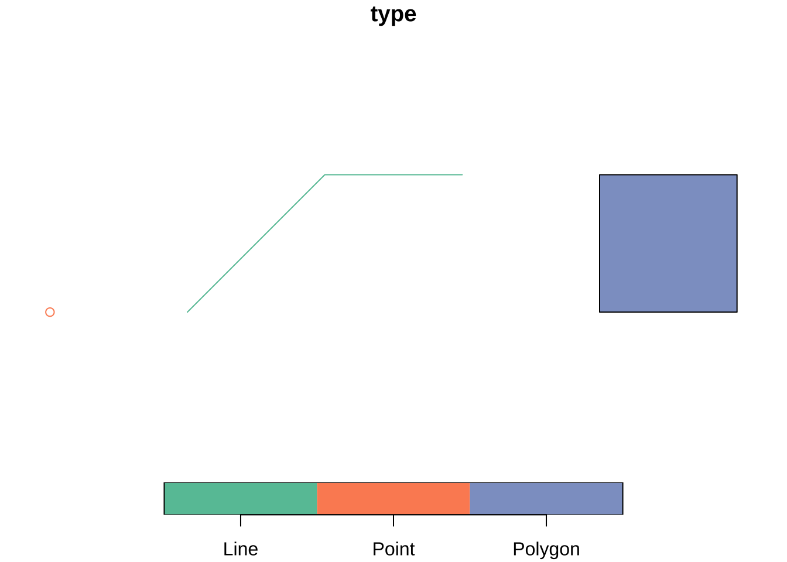
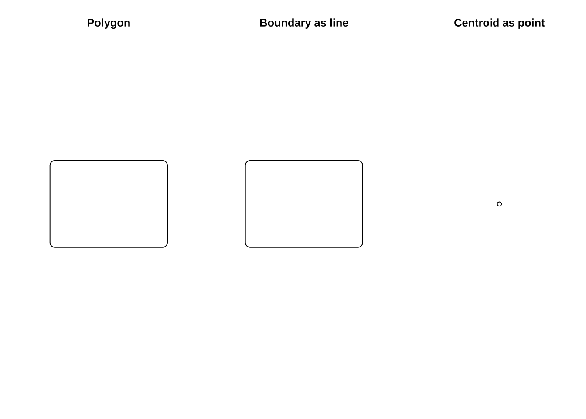
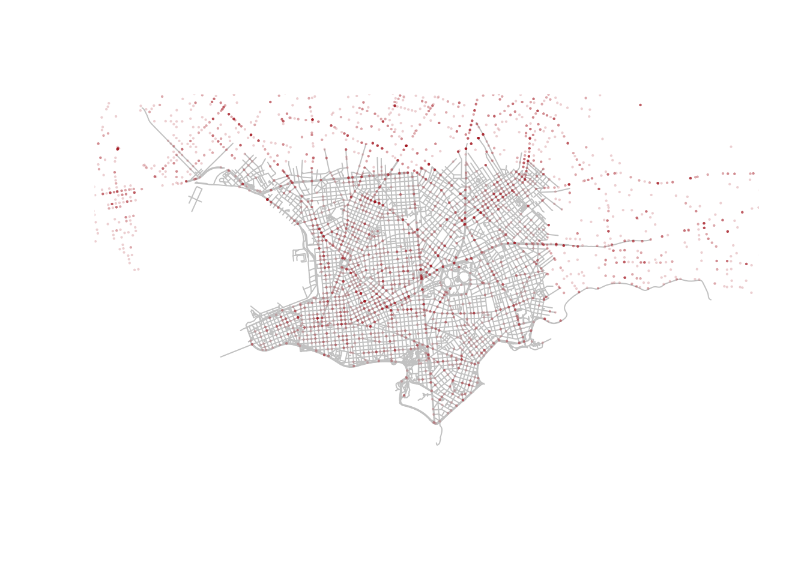
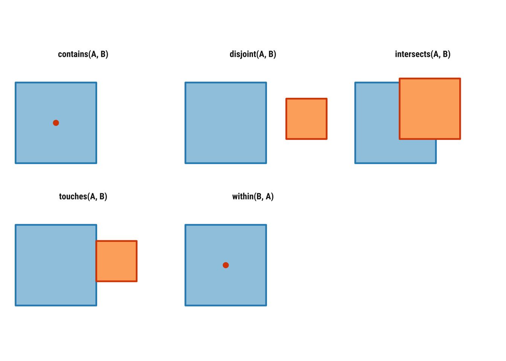
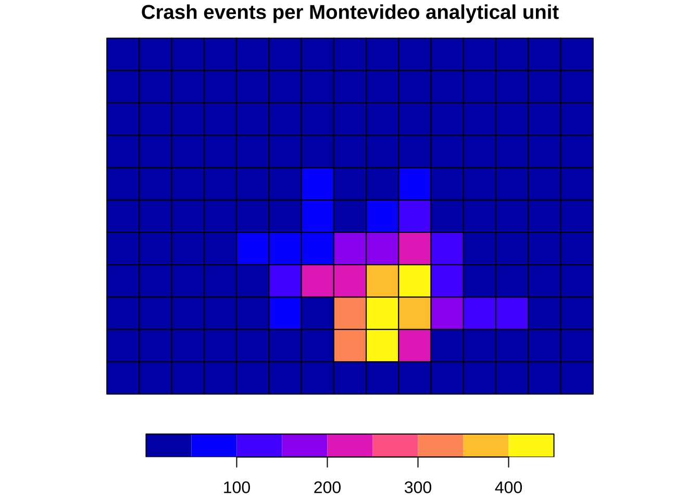
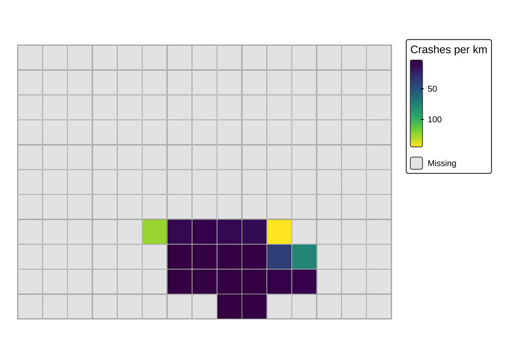
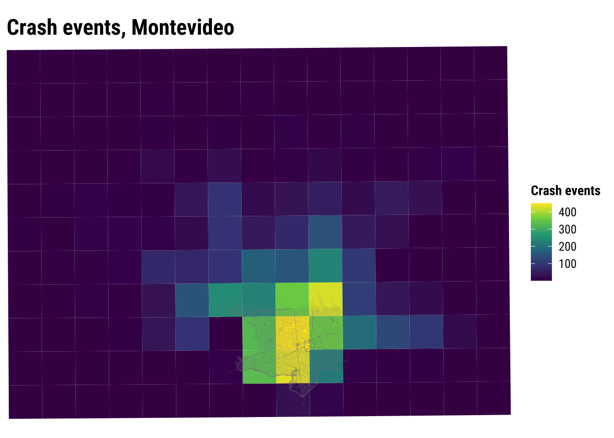

2 Spatial data wrangling
This chapter introduces the core practical skills needed to work with spatial data in R. The emphasis is on spatial data rather than on general R basics: geometry, coordinate reference systems, the relationship between attributes and location, and the spatial operations that support later modelling work (Lovelace, Nowosad, and Muenchow 2019; Brunsdon and Comber 2015). These concepts shape the patterns we can see, provide measurements we can trust, and how confidently we can interpret the outputs of our analyses.
The chapter is structured as follows. We begin with the concept of simple features and why they matter. Then we move through geometry types, Coordinate Reference Systems (CRS), attribute wrangling, topological relations, spatial joins and aggregation before moving on to map making. We use traffic injury records for Montevideo. We will work with both point and line geometries, cover projection changes, topological relations, join, and mapping these data.
2.1 Dependencies
2.2 The spatial stack
We will primarily use the sf package for spatial data manipulation. The name stands for simple features, a standard way of representing vector spatial data that is widely used across GIS software and open-source geospatial tools (Lovelace, Nowosad, and Muenchow 2019; Bivand, Pebesma, and Gómez-Rubio 2013). sf let us work with spatial data as if they were standard data frames while still preserving geometry, projection metadata and spatial relationships. This makes it much easier to move between cleaning, mapping and analysis without constantly converting objects from one format to another.
An sf object combines two things:
- attribute data: the familiar columns that describe observations
- geometry: a special list-column that stores location and shape
That combination is a key strength of modern spatial workflows in R. The same verbs used for tabular wrangling such as select(), filter(), mutate() and summarise() also work on spatial tables. You therefore do not need to learn one workflow for tables and a separate for mapping. You can build a single pipeline in which geometry remains visible and usable throughout the analysis.
This is also why sf has become such a useful bridge between GIS and data science. Earlier spatial workflows in R often relied on older class systems that were historically important but less intuitive for teaching and less aligned with contemporary data pipelines. sf is usually the best place to start because it makes the structure of spatial data easier to inspect, easier to manipulate and connect to visualisation packages such as tmap and ggplot2.
2.3 Reading spatial data
In applied work, spatial data usually arrive through one of two routes. They may come as spatial files such as a GeoPackage, shapefile or GeoJSON. In those cases, we normally use st_read(). Alternatively, they may come as an ordinary table with coordinate columns. In that case, we first read the table with a function such as read_csv() and then convert it to an sf object with st_as_sf().
This distinction is worth making explicit as we will use different import steps later. The important skill is recognising the structure of the source data and choosing the correct route into an sf workflow. Once the data are in sf form, the later steps are much more consistent.
# Example 1: read Montevideo roads from a spatial file
roads <- st_read("data/osm/montevideo_roads.gpkg")
# Example 2: read Montevideo incidents from a CSV and convert to sf
injuries_raw <- read_csv("data/montevideo-traffic-injuries-2022.csv")
injuries <- st_as_sf(injuries_raw, coords = c("X", "Y"), crs = 32721)For this chapter, we use both routes. We will use a Montevideo injuries dataset which is stored as a CSV, with coordinate columns X and Y are in EPSG:32721, a projected CRS for UTM zone 21S. The roads file, by contrast, is already a spatial layer and is stored in longitude and latitude. That contrast makes the pair a particularly good teaching example to deploy two different ways of reading data into sf, and different CRSs that must be understood before layers can be combined safely.
2.4 Reading and inspecting spatial data
We begin by reading the Montevideo injuries table, converting it into an sf object, and collapsing person-level rows to unique crash events so the unit of analysis. We also read the Montevideo roads GeoPackage and transform it into the same projected CRS so that points and lines can be overlaid, joined and measured consistently.
To support polygon-based operations, we derive a set of Montevideo analytical units from the bounding box of the crash events. These are not official administrative areas, but they are a practical teaching device. They let us illustrate point-in-polygon joins, topological relations and choropleth mapping.
injuries_raw <- read_csv(
"data/montevideo-traffic-injuries-2022.csv",
show_col_types = FALSE
) |>
# Standardise names once so later code is easier to read
rename_with(\(x) {
x |>
iconv(to = "ASCII//TRANSLIT", sub = "") |>
make.names(unique = TRUE) |>
str_to_lower()
})
crash_events_tbl <- injuries_raw |>
# Collapse person-level rows to unique crash events
group_by(novedad, x, y) |>
summarise(
persons_recorded = n(),
fecha = first(fecha),
hora = first(hora),
tipo.de.resultado = first(tipo.de.resultado),
tipo.de.vehiculo = first(tipo.de.vehiculo),
calle = first(calle),
zona = first(zona),
.groups = "drop"
)
crash_events <- st_as_sf(
crash_events_tbl,
# Turn the coordinate columns into sf point geometry
coords = c("x", "y"),
crs = 32721,
remove = FALSE
)
roads <- st_read("data/osm/montevideo_roads.gpkg", quiet = TRUE)
roads_utm <- st_transform(roads, 32721)
study_window <- st_as_sfc(st_bbox(crash_events)) |>
st_buffer(1500)
analysis_units <- st_make_grid(
study_window,
cellsize = 2500,
square = TRUE
) |>
st_as_sf() |>
mutate(unit_id = row_number())The first thing we should do after import is inspect the object carefully. Spatial data analysis or modelling often goes wrong because the spatial object was poorly understood at the start. A few simple checks can prevent a lot of avoidable confusion.
# Check the overall object class for the crash-event layer
class(crash_events)[1] "sf" "tbl_df" "tbl" "data.frame"# Confirm the geometry type stored in the crash-event layer
st_geometry_type(crash_events, by_geometry = FALSE)[1] POINT
18 Levels: GEOMETRY POINT LINESTRING POLYGON MULTIPOINT ... TRIANGLE# Inspect the coordinate reference system attached to the crash events
st_crs(crash_events)Coordinate Reference System:
User input: EPSG:32721
wkt:
PROJCRS["WGS 84 / UTM zone 21S",
BASEGEOGCRS["WGS 84",
ENSEMBLE["World Geodetic System 1984 ensemble",
MEMBER["World Geodetic System 1984 (Transit)"],
MEMBER["World Geodetic System 1984 (G730)"],
MEMBER["World Geodetic System 1984 (G873)"],
MEMBER["World Geodetic System 1984 (G1150)"],
MEMBER["World Geodetic System 1984 (G1674)"],
MEMBER["World Geodetic System 1984 (G1762)"],
MEMBER["World Geodetic System 1984 (G2139)"],
MEMBER["World Geodetic System 1984 (G2296)"],
ELLIPSOID["WGS 84",6378137,298.257223563,
LENGTHUNIT["metre",1]],
ENSEMBLEACCURACY[2.0]],
PRIMEM["Greenwich",0,
ANGLEUNIT["degree",0.0174532925199433]],
ID["EPSG",4326]],
CONVERSION["UTM zone 21S",
METHOD["Transverse Mercator",
ID["EPSG",9807]],
PARAMETER["Latitude of natural origin",0,
ANGLEUNIT["degree",0.0174532925199433],
ID["EPSG",8801]],
PARAMETER["Longitude of natural origin",-57,
ANGLEUNIT["degree",0.0174532925199433],
ID["EPSG",8802]],
PARAMETER["Scale factor at natural origin",0.9996,
SCALEUNIT["unity",1],
ID["EPSG",8805]],
PARAMETER["False easting",500000,
LENGTHUNIT["metre",1],
ID["EPSG",8806]],
PARAMETER["False northing",10000000,
LENGTHUNIT["metre",1],
ID["EPSG",8807]]],
CS[Cartesian,2],
AXIS["(E)",east,
ORDER[1],
LENGTHUNIT["metre",1]],
AXIS["(N)",north,
ORDER[2],
LENGTHUNIT["metre",1]],
USAGE[
SCOPE["Navigation and medium accuracy spatial referencing."],
AREA["Between 60°W and 54°W, southern hemisphere between 80°S and equator, onshore and offshore. Argentina. Bolivia. Brazil. Falkland Islands (Malvinas). Paraguay. Uruguay."],
BBOX[-80,-60,0,-54]],
ID["EPSG",32721]]# List the available attribute columns
names(crash_events) [1] "novedad" "x" "y"
[4] "persons_recorded" "fecha" "hora"
[7] "tipo.de.resultado" "tipo.de.vehiculo" "calle"
[10] "zona" "geometry" # Preview the structure of the crash-event table
glimpse(crash_events)Rows: 6,333
Columns: 11
$ novedad <dbl> 14066691, 14067171, 14068548, 14068985, 14069092, 14…
$ x <dbl> 577450, 572280, 571120, 579040, 562970, 575515, 5758…
$ y <dbl> 6139860, 6148440, 6145960, 6149800, 6147015, 6144930…
$ persons_recorded <int> 2, 2, 1, 1, 1, 1, 3, 2, 2, 1, 2, 3, 2, 1, 1, 1, 1, 1…
$ fecha <chr> "01/01/2022", "01/01/2022", "01/01/2022", "01/01/202…
$ hora <dbl> 5, 8, 16, 19, 20, 23, 0, 23, 14, 16, 18, 19, 20, 22,…
$ tipo.de.resultado <chr> "HERIDO LEVE", "HERIDO LEVE", "HERIDO LEVE", "HERIDO…
$ tipo.de.vehiculo <chr> "MOTO", "AUTO", "MOTO", "MOTO", "BICICLETA", "MOTO",…
$ calle <chr> "JOANICO", "CAMINO CARMELO COLMAN", "BOULEVARD JOSE …
$ zona <chr> "URBANA", "URBANA", "URBANA", "URBANA", "URBANA", "U…
$ geometry <POINT [m]> POINT (577450 6139860), POINT (572280 6148440)…# Repeat the same basic checks for the roads layer
class(roads)[1] "sf" "data.frame"st_geometry_type(roads, by_geometry = FALSE)[1] LINESTRING
18 Levels: GEOMETRY POINT LINESTRING POLYGON MULTIPOINT ... TRIANGLEst_crs(roads)Coordinate Reference System:
User input: WGS 84
wkt:
GEOGCRS["WGS 84",
ENSEMBLE["World Geodetic System 1984 ensemble",
MEMBER["World Geodetic System 1984 (Transit)"],
MEMBER["World Geodetic System 1984 (G730)"],
MEMBER["World Geodetic System 1984 (G873)"],
MEMBER["World Geodetic System 1984 (G1150)"],
MEMBER["World Geodetic System 1984 (G1674)"],
MEMBER["World Geodetic System 1984 (G1762)"],
MEMBER["World Geodetic System 1984 (G2139)"],
MEMBER["World Geodetic System 1984 (G2296)"],
ELLIPSOID["WGS 84",6378137,298.257223563,
LENGTHUNIT["metre",1]],
ENSEMBLEACCURACY[2.0]],
PRIMEM["Greenwich",0,
ANGLEUNIT["degree",0.0174532925199433]],
CS[ellipsoidal,2],
AXIS["geodetic latitude (Lat)",north,
ORDER[1],
ANGLEUNIT["degree",0.0174532925199433]],
AXIS["geodetic longitude (Lon)",east,
ORDER[2],
ANGLEUNIT["degree",0.0174532925199433]],
USAGE[
SCOPE["Horizontal component of 3D system."],
AREA["World."],
BBOX[-90,-180,90,180]],
ID["EPSG",4326]]# Inspect the polygon analytical units used later for joins and mapping
class(analysis_units)[1] "sf" "data.frame"st_geometry_type(analysis_units, by_geometry = FALSE)[1] POLYGON
18 Levels: GEOMETRY POINT LINESTRING POLYGON MULTIPOINT ... TRIANGLEThree basic questions are worth asking every time you load spatial data:
- What does one row represent?
- What geometry type does the object store?
- What CRS is attached to the layer?
For crash_events, one row represents one unique crash event, the geometry type is POINT, and the CRS is EPSG:32721. For roads, one row represents one road segment stored as a LINESTRING in geographic coordinates, while for analysis_units one row represents a polygonal analytical unit covering the Montevideo study area. These may sound like simple checks, but they answer practical questions that shape everything that follows. What is the observational unit? What kinds of operations make sense for this object? What measurements can we trust? Many downstream errors in spatial analysis come from skipping exactly this stage.
2.5 Attribute data versus geometry
A useful habit in spatial wrangling is to keep the distinction between attribute data and geometry. The attributes tell us about the observation in substantive terms, such as injury outcome, time of day, vehicle type or locality. The geometry tells us where the observation is, and that location is what allows us to map it, join it to another layer, measure distance, or aggregate it into another geography.
This distinction matters because not every operation is spatial in the same sense. Counting the number of injury outcomes is a tabular operation even if the data are stored in an sf object. By contrast, assigning each injury record to a grid cell or a polygon boundary depends on geometry and location. Good spatial work means recognising when we are operating on the attribute side of the data and when we are operating on the spatial side.
st_geometry(crash_events)[1:3]Geometry set for 3 features
Geometry type: POINT
Dimension: XY
Bounding box: xmin: 571120 ymin: 6139860 xmax: 577450 ymax: 6148440
Projected CRS: WGS 84 / UTM zone 21Scrash_events |>
st_drop_geometry() |>
glimpse()Rows: 6,333
Columns: 10
$ novedad <dbl> 14066691, 14067171, 14068548, 14068985, 14069092, 14…
$ x <dbl> 577450, 572280, 571120, 579040, 562970, 575515, 5758…
$ y <dbl> 6139860, 6148440, 6145960, 6149800, 6147015, 6144930…
$ persons_recorded <int> 2, 2, 1, 1, 1, 1, 3, 2, 2, 1, 2, 3, 2, 1, 1, 1, 1, 1…
$ fecha <chr> "01/01/2022", "01/01/2022", "01/01/2022", "01/01/202…
$ hora <dbl> 5, 8, 16, 19, 20, 23, 0, 23, 14, 16, 18, 19, 20, 22,…
$ tipo.de.resultado <chr> "HERIDO LEVE", "HERIDO LEVE", "HERIDO LEVE", "HERIDO…
$ tipo.de.vehiculo <chr> "MOTO", "AUTO", "MOTO", "MOTO", "BICICLETA", "MOTO",…
$ calle <chr> "JOANICO", "CAMINO CARMELO COLMAN", "BOULEVARD JOSE …
$ zona <chr> "URBANA", "URBANA", "URBANA", "URBANA", "URBANA", "U…st_drop_geometry() is especially useful because it allows us to switch temporarily into a purely tabular workflow without losing track of the fact that the original object is spatial. This is often the cleanest way to produce summary tables or quick diagnostic checks before returning to mapping or spatial joins. Learning when to keep or drop the geometry is part of efficient spatial wrangling.
2.6 Geometry basics
Vector spatial data are usually represented with three main geometry types:
- points for events or locations
- lines for routes, flows or network segments
- polygons for areas such as departments, municipalities or census zones
These geometry types define what operations make sense and what kinds of questions are natural to ask. Point data often invite clustering or density analysis. Line data emphasise movement, connectivity and path structure. Polygon data bring in questions of area, adjacency, containment and aggregation. Geometry guides the choice of an appropriate analytical model. It does not only matter for mapping. The easiest way to see the difference is to build a tiny geometry collection from scratch.

We can also derive new geometry types from an existing layer. Starting from the polygon study window around the Montevideo crash events, st_boundary() returns lines and st_centroid() returns points. This is helpful because the same empirical unit is often represented in different ways depending on the task. A region may be treated as an area when mapping counts, as a centroid when measuring separation between units, and as a boundary when the concern is limit or edge rather than area.

This ability to move between geometry types is more important than it may first appear. Many spatial methods depend on these operations, including distance matrices between centroids, polygon adjacency structures, flow-line construction and point aggregation. These are different representations of related spatial information.
Another reason geometry types matter is that they imply different kinds of uncertainty. A point may represent an exact observed location, a geocoded approximation, or the centroid of a larger area. A polygon may represent a legal boundary, an administrative reporting unit, or an analytical zone that we created ourselves. Being clear about what the geometry actually stands for is therefore part of substantive interpretation.
2.7 Coordinate Reference Systems
Coordinate Reference Systems tell us how coordinates relate to the Earth. In practice, CRS choice affects whether a layer is suitable for display, for measuring distances or areas, and for combining with other layers (Lovelace, Nowosad, and Muenchow 2019; Brunsdon and Comber 2015). Students often first meet CRS as a technical detail, but it is better understood as the measurement framework within which the spatial data become meaningful.
The two most common CRS situations you will encounter are:
- geographic CRS: such as EPSG:4326, which use longitude and latitude
- projected CRS: such as EPSG:32721, which use planar coordinates in meters
The Montevideo roads layer is stored in EPSG:4326. Our crash-events layer is in EPSG:32721. Before combining them, they need to share a common CRS. This is an important practical check in spatial analysis, because mismatched CRSs can produce overlays that fail silently or measurements that look plausible but are wrong.
st_crs(roads)Coordinate Reference System:
User input: WGS 84
wkt:
GEOGCRS["WGS 84",
ENSEMBLE["World Geodetic System 1984 ensemble",
MEMBER["World Geodetic System 1984 (Transit)"],
MEMBER["World Geodetic System 1984 (G730)"],
MEMBER["World Geodetic System 1984 (G873)"],
MEMBER["World Geodetic System 1984 (G1150)"],
MEMBER["World Geodetic System 1984 (G1674)"],
MEMBER["World Geodetic System 1984 (G1762)"],
MEMBER["World Geodetic System 1984 (G2139)"],
MEMBER["World Geodetic System 1984 (G2296)"],
ELLIPSOID["WGS 84",6378137,298.257223563,
LENGTHUNIT["metre",1]],
ENSEMBLEACCURACY[2.0]],
PRIMEM["Greenwich",0,
ANGLEUNIT["degree",0.0174532925199433]],
CS[ellipsoidal,2],
AXIS["geodetic latitude (Lat)",north,
ORDER[1],
ANGLEUNIT["degree",0.0174532925199433]],
AXIS["geodetic longitude (Lon)",east,
ORDER[2],
ANGLEUNIT["degree",0.0174532925199433]],
USAGE[
SCOPE["Horizontal component of 3D system."],
AREA["World."],
BBOX[-90,-180,90,180]],
ID["EPSG",4326]]st_crs(crash_events)Coordinate Reference System:
User input: EPSG:32721
wkt:
PROJCRS["WGS 84 / UTM zone 21S",
BASEGEOGCRS["WGS 84",
ENSEMBLE["World Geodetic System 1984 ensemble",
MEMBER["World Geodetic System 1984 (Transit)"],
MEMBER["World Geodetic System 1984 (G730)"],
MEMBER["World Geodetic System 1984 (G873)"],
MEMBER["World Geodetic System 1984 (G1150)"],
MEMBER["World Geodetic System 1984 (G1674)"],
MEMBER["World Geodetic System 1984 (G1762)"],
MEMBER["World Geodetic System 1984 (G2139)"],
MEMBER["World Geodetic System 1984 (G2296)"],
ELLIPSOID["WGS 84",6378137,298.257223563,
LENGTHUNIT["metre",1]],
ENSEMBLEACCURACY[2.0]],
PRIMEM["Greenwich",0,
ANGLEUNIT["degree",0.0174532925199433]],
ID["EPSG",4326]],
CONVERSION["UTM zone 21S",
METHOD["Transverse Mercator",
ID["EPSG",9807]],
PARAMETER["Latitude of natural origin",0,
ANGLEUNIT["degree",0.0174532925199433],
ID["EPSG",8801]],
PARAMETER["Longitude of natural origin",-57,
ANGLEUNIT["degree",0.0174532925199433],
ID["EPSG",8802]],
PARAMETER["Scale factor at natural origin",0.9996,
SCALEUNIT["unity",1],
ID["EPSG",8805]],
PARAMETER["False easting",500000,
LENGTHUNIT["metre",1],
ID["EPSG",8806]],
PARAMETER["False northing",10000000,
LENGTHUNIT["metre",1],
ID["EPSG",8807]]],
CS[Cartesian,2],
AXIS["(E)",east,
ORDER[1],
LENGTHUNIT["metre",1]],
AXIS["(N)",north,
ORDER[2],
LENGTHUNIT["metre",1]],
USAGE[
SCOPE["Navigation and medium accuracy spatial referencing."],
AREA["Between 60°W and 54°W, southern hemisphere between 80°S and equator, onshore and offshore. Argentina. Bolivia. Brazil. Falkland Islands (Malvinas). Paraguay. Uruguay."],
BBOX[-80,-60,0,-54]],
ID["EPSG",32721]]crash_events_ll <- st_transform(crash_events, 4326)
roads_utm <- st_transform(roads, 32721)A useful rule of thumb is:
- use a projected CRS when measuring distance, length or area.
- use longitude/latitude mainly for storage, exchange and web mapping.
For example, the area of the Montevideo study window should be computed in a projected CRS rather than directly in longitude/latitude.
st_area(study_window) / 10^6908.5514 [m^2]The same logic applies to buffers, nearest-neighbour distances, travel-cost approximations and many accessibility indicators. We will rely on these ideas more heavily in later chapters, so keep the CRS logic in mind.
Because both layers now have comparable CRSs, we can safely overlay crash events on the Montevideo roads network.
plot(st_geometry(roads), col = "grey80")
plot(
st_geometry(crash_events_ll),
col = scales::alpha("firebrick", 0.2),
pch = 16,
cex = 0.3,
add = TRUE
)
The crash points line up with the local road network rather than floating in empty space. Even this very simple overlay is useful because it checks that the geometry and projection behave as expected. It also reminds us that a map can be both an analytical output and a data-quality diagnostic. Before asking substantive questions, it is good practice to first ask whether the layers line up in the way we would expect.
An additional distinction that should be kept in mind is between assigning and transforming a CRS. If a layer is missing CRS metadata but you know it is already in EPSG:32721, you would assign that CRS. If the layer is correctly labelled as EPSG:32721 and you want to convert it to EPSG:4326 for display or overlay, you would transform it with st_transform(). Confusing those two actions is a common source of avoidable mistakes.
2.8 Topological relations
Topological relations describe how spatial objects relate to one another in space. They are often introduced through binary predicates such as st_intersects(), st_within(), st_contains(), st_touches() and st_disjoint(), which return TRUE or FALSE statements about whether a given relation holds between two geometries. As treated in Geocomputation with R, these relations are especially useful because they make spatial subsetting and joining much more explicit than simply saying that one layer was “matched” to another (Lovelace, Nowosad, and Muenchow 2019).
Some of these relations are symmetrical and some are not. If two polygons touch, the order does not matter: if A touches B, B touches A. But order does matter for relations such as within and contains. If a point is within a polygon, the polygon contains the point, but the reverse statements are not equivalent. That is why we need to be precise about which geometry plays which role in the operation.
Before applying these ideas to Uruguay data, it helps to visualise them in a very simple setting. In Figure 2.1, the blue square is the reference geometry and the orange feature is the comparison geometry. The point of the diagram is to provide conceptual clarity. It usefully illustrates when two objects intersect, touch, remain disjoint or stand in an asymmetric relation such as within and contains.

To see how this works in practice, we can focus on one Montevideo analytical unit and ask how it relates to nearby polygons, crash events and road segments.
units_with_points <- analysis_units[lengths(st_intersects(analysis_units, crash_events)) > 0, ]
selected_unit <- units_with_points |>
slice(1)
# Points intersecting the selected polygon
points_in_unit <- crash_events[selected_unit, , op = st_intersects]
# Neighboring polygons that share a boundary with it
touching_units <- analysis_units[selected_unit, , op = st_touches]
# Polygons with no spatial contact at all
disjoint_units <- analysis_units[selected_unit, , op = st_disjoint]
# Road segments intersecting the selected polygon
roads_in_unit <- roads_utm[selected_unit, , op = st_intersects]
c(
points_in_unit = nrow(points_in_unit),
touching_units = nrow(touching_units),
disjoint_units = nrow(disjoint_units),
roads_in_unit = nrow(roads_in_unit)
)points_in_unit touching_units disjoint_units roads_in_unit
31 5 159 173 The example above uses the square-bracket subsetting syntax discussed in Geocomputation with R: x[y, , op = ...] means “return the features in x that satisfy the chosen topological relation with y”. Here, the target object changes depending on the question. When x is crash_events, we ask which point events intersect the selected polygon. When x is analysis_units, we ask which polygons touch it or which are disjoint from it. When x is roads_utm, we ask which road segments intersect the same unit.
We can also call the predicates directly. This is helpful when we want to inspect the logical structure of the relationship rather than immediately subset a layer.
st_intersects(selected_unit, touching_units[1:3, ])Sparse geometry binary predicate list of length 1, where the predicate
was `intersects'
1: 1, 2, 3st_contains(selected_unit, points_in_unit[1:min(5, nrow(points_in_unit)), ])Sparse geometry binary predicate list of length 1, where the predicate
was `contains'
1: 1, 2, 3, 4, 5Sparse geometry binary predicate list of length 5, where the predicate
was `within'
1: 1
2: 1
3: 1
4: 1
5: 1These topological relations matter because they sit underneath many spatial operations that otherwise look quite different. Spatial subsetting, point-in-polygon joins, neighbour definitions, overlay logic and even some forms of spatial weighting all rely on statements about which features intersect, touch, contain or remain separate from others.
2.9 Geometry validity and safe workflows
Before moving into joins and aggregation, we should briefly cover geometry validity. Invalid geometries are more common with polygons than with points, but they matter because they can cause unexpected failures in overlays, intersections or neighbour calculations (Bivand, Pebesma, and Gómez-Rubio 2013). In applied workflows, it is a good habit to validate layers that will be reused repeatedly.
st_is_valid(roads_utm)[1:5][1] TRUE TRUE TRUE TRUE TRUEanalysis_units <- st_make_valid(analysis_units)In this example, the road and analytical-unit geometries are already usable, so st_make_valid() is mainly a defensive step. Even so, it introduces an important principle. Spatial wrangling is about reshaping attributes and ensuring that the geometry is analytically usable. Later chapters that work with more complex polygon systems will depend much more heavily on this kind of checking.
2.10 Attribute operations with spatial tables
A strength of sf is that ordinary data manipulation and spatial operations can be combined in the same workflow. This is especially important in social-science applications, where we rarely work with geometry alone. Most tasks involve switching repeatedly between descriptive variables, geographic relations and derived indicators that bring the two together (Lovelace, Nowosad, and Muenchow 2019; Brunsdon and Comber 2015).
We can begin with familiar tabular tasks such as counting categories, selecting variables and creating new fields. These are not separate from spatial analysis. A large share of spatial wrangling consists of preparing the attribute side of the data carefully enough that mapping, joining and modelling become meaningful rather than mechanical.
crash_events |>
st_drop_geometry() |>
count(tipo.de.resultado, sort = TRUE)# A tibble: 4 × 2
tipo.de.resultado n
<chr> <int>
1 HERIDO LEVE 5556
2 HERIDO GRAVE 686
3 FALLECIDO EN EL LUGAR 62
4 FALLECIDO EN CENTRO DE ASISTENCIA 29crash_events_selected <- crash_events |>
select(fecha, hora, tipo.de.resultado, tipo.de.vehiculo, geometry) |>
mutate(
severity = case_when(
tipo.de.resultado == "HERIDO LEVE" ~ "Minor injury",
TRUE ~ "Other outcome"
),
hour_group = case_when(
hora < 6 ~ "Night",
hora < 12 ~ "Morning",
hora < 18 ~ "Afternoon",
TRUE ~ "Evening"
)
)
crash_events_selected |>
st_drop_geometry() |>
count(hour_group, sort = TRUE)# A tibble: 4 × 2
hour_group n
<chr> <int>
1 Afternoon 2493
2 Evening 1828
3 Morning 1621
4 Night 391Filtering works in the same way as with a regular data frame.
[1] 777This continuity is one of the main pedagogical advantages of sf. You can carry over familiar dplyr habits while gradually adding spatial logic to their workflow. It also makes exploratory analysis faster, because we can create spatial subsets without first discarding the geometry.
It is also useful to distinguish an attribute join from a spatial join. An attribute join, such as left_join(), matches records using a shared identifier such as an area code. A spatial join, such as st_join(), matches records using location, for example by assigning points to polygons. In real projects, both kinds of joining often appear in the same analysis, and the ability to tell them apart is important for both debugging and interpretation.
2.11 Basic spatial operations
We have already covered spatial data reading, inspection, transformation, topological relations and validation. We now add two especially important operations:
- spatial join: attach attributes based on location
- spatial aggregation: summarise many features into fewer spatial units
To illustrate these ideas, we use the Montevideo analytical units created earlier and count how many crash events fall inside each one. We also calculate the amount of road length inside each unit so that the polygons carry more than one attribut,e and can support a more meaningful mapped comparison. This introduces a general workflow for turning fine-grained observations into an areal representation that is easier to compare across space.
# Join point events to polygon units before counting them
unit_counts <- st_join(analysis_units, crash_events, join = st_intersects, left = TRUE) |>
st_drop_geometry() |>
count(unit_id, name = "n_injuries")
road_segments_by_unit <- st_intersection(
analysis_units |> select(unit_id),
roads_utm |> select(highway, name)
)
road_segments_by_unit$road_km <- as.numeric(st_length(road_segments_by_unit)) / 1000
road_lengths <- road_segments_by_unit |>
st_drop_geometry() |>
group_by(unit_id) |>
summarise(road_km = sum(road_km), .groups = "drop")
analysis_units <- analysis_units |>
# Attach the aggregated counts back onto the polygon layer
left_join(unit_counts, by = "unit_id") |>
left_join(road_lengths, by = "unit_id") |>
mutate(
n_injuries = replace_na(n_injuries, 0),
road_km = replace_na(road_km, 0),
injuries_per_km = if_else(road_km > 0, n_injuries / road_km, NA_real_)
)This is a simple but very common pattern in spatial data wrangling:
- define the target geography
- join observations into that geography
- aggregate the attributes you need
Because the units were built from the local study area, we can move directly to summarising their crash and road attributes.
summary(analysis_units$n_injuries) Min. 1st Qu. Median Mean 3rd Qu. Max.
1.00 1.00 1.00 39.05 23.00 450.00 summary(analysis_units$road_km) Min. 1st Qu. Median Mean 3rd Qu. Max.
0.000 0.000 0.000 5.382 0.000 141.846 This example is deliberately basic. But it introduces the logic behind many later tasks, such as assigning point records to areas, building polygon summaries and preparing mapped indicators. You will also find the same ideas in choropleth preparation, exposure modelling, area interpolation and many forms of spatial smoothing. The exact technique may change, but the workflow of defining a geography, attaching observations and summarising attributes is foundational.
The choice of unit size still matters. Smaller polygon units reveal more local variation but can create many sparse areas and a noisier pattern. Larger units smooth the data more strongly and may hide local concentration. This is a useful early reminder that spatial wrangling is never only technical. Choices about representation and aggregation shape the patterns that we later describe and explain. The same is true of the attribute we choose to map. Raw crash counts and crashes per kilometre of road are both informative, but they answer slightly different questions. In the next three examples, we keep the mapped variable fixed as raw crash counts so the comparison is about the mapping systems rather than about a changing indicator.
2.12 Spatial data mapping
The same spatial object can be mapped at different levels of sophistication. A useful progression in applied work is:
-
plot()for a fast check -
tmapfor clear thematic maps -
ggplot2for more customised publication-style output
2.12.1 A quick base plot
Base plotting is ideal for first inspection because it is fast and requires little setup. In practical workflows, this matters because many maps are made first to check geometry, extent, missing values or obvious outliers rather than to communicate final results. Quick plotting is therefore part of good analysis, not a lesser version of “real” mapping.
plot(analysis_units["n_injuries"], key.pos = 1, main = "Crash events, Montevideo")
2.12.2 A thematic map with tmap
tmap is especially good for teaching because it makes the separation between data (tm_shape()) and visual layers (tm_fill(), tm_borders(), tm_dots()) very explicit. That layered logic helps people see how thematic maps are constructed and how cartographic choices affect interpretation (Lovelace, Nowosad, and Muenchow 2019). It is also a useful stepping stone between quick diagnostics and more customised visual communication.
tmap_mode("plot")
tm_shape(analysis_units) +
tm_fill(
col = "n_injuries",
palette = "viridis",
style = "cont",
title = "Crash events"
) +
tm_borders(col = "white", lwd = 0.4) +
tm_layout(frame = FALSE)
2.12.3 A customised map with ggplot2
ggplot2 is widerly used to create high-quality charts. The geom_sf() layer makes it also a powerful tool for mapping when you want more control over themes, labels and layer composition. ggplot2 reconnects spatial data work with a broader data-visualisation toolkit (Brunsdon and Comber 2015). The same grammar can be used to build maps, charts and combined figure layouts in a consistent style.
analysis_units_ll <- st_transform(analysis_units, 4326)
ggplot() +
# Fill polygons with a sequential palette from the shared course style
geom_sf(data = analysis_units_ll, aes(fill = n_injuries), colour = NA) +
# Add the road network to keep the analytical units in local context
geom_sf(data = roads, colour = "grey50", linewidth = 0.15, alpha = 0.35) +
coord_sf(expand = FALSE) +
scale_fill_course_seq_c(name = "Crash events") +
labs(
title = "Crash events, Montevideo",
) +
theme_map_course() +
theme(
legend.position = "right"
)
An important point to note is that spatial data wrangling and mapping are tightly connected. Once geometry and CRS are handled correctly, the same sf object can support quick checks, exploratory analysis and more polished communication. Learning when to move from one level of mapping to another is part of becoming an effective spatial analyst, because different stages of a project demand different balances between speed, clarity and control.
You may also find that each mapping approach opens onto a slightly different set of skills. Base plotting encourages quick exploratory thinking, tmap makes thematic cartography especially accessible, and ggplot2 connects spatial work to a wider grammar of visualisation. Developing comfort across all three is often more valuable than mastering only one.
2.13 Recap
This chapter has introduced the core spatial workflow used throughout the course:
- read spatial and non-spatial data
- convert tabular coordinates into simple features
- inspect geometry type, attributes and CRS
- distinguish the attribute side of the data from the geometry side
- transform CRSs before overlay or measurement
- validate geometry before repeated use
- combine attribute wrangling with spatial joins and aggregation
- connect point, line and polygon data within a single local case
- produce basic maps at increasing levels of control
These are foundational skills. Later chapters build on them when we move to point patterns, flows, spatial dependence and spatial heterogeneity. In that sense, this chapter establishes the conceptual and practical habits that make later modelling choices easier to interpret and easier to defend.
There are several productive follow-up directions from the material in this chapter. One is to experiment with alternative spatial units by changing the size and shape of the Montevideo analytical polygons. Another is to compare projected CRSs and think about why one may be more appropriate than another for a given country or research question. A third is to practice moving back and forth between attribute summaries and spatial summaries, since that rhythm is one of the recurring features of real spatial analysis.
2.14 Tasks
- Use
st_drop_geometry()andcount()to identify the most commontipo.de.vehiculovalues in the crash-events table. - Create a new time-of-day grouping with your own cut-points and compare it with the one used above.
- Change the analytical-unit
cellsizeand see how the mapped pattern changes. What does this suggest about scale and aggregation? - Modify the
ggplot2map so that crash events are shown as points on top of the polygon units. - Create a second polygon-based representation using a different unit size and compare it with the current analytical units.